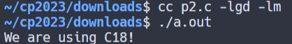

w15 <<
Previous Next >> c_ex
ansic
1.編寫一個 C 程式來列印您的姓名、出生日期和手機號碼。
#include <stdio.h>
int main()
{
// Print Name
printf("Name : Andrew Wu\n");
// Print Date of Birth
printf("DOB : June 8, 2005\n");
// Print Mobile Number
printf("Mobile : 06-200000000\n");
// Indicate successful execution
return(0);
}

2.編寫一個 C 程式來取得您正在使用的 C 版本。
#include <stdio.h>
int main(int argc, char** argv) {
// Check for C standard version
#if __STDC_VERSION__ >= 201710L
printf("We are using C18!\n");
#else
printf("We are using C89/C90!\n");
#endif
// Indicate successful execution
return 0;
}

3.寫一個 C 程序，使用 (#) 列印一個區塊 F，其中 F 的高度為 6 個字符，寬度為 5 個和 4 個字符。並且還列印一個非常大的“C”。
#include <stdio.h>
int main()
{
// Print a line of hashes
printf("######\n");
// Print a single hash
printf("#\n");
// Print a single hash
printf("#\n");
// Print a line of hashes
printf("#####\n");
// Print a single hash
printf("#\n");
// Print a single hash
printf("#\n");
// Print a single hash
printf("#\n");
// Print top line of pattern
printf(" ######\n");
// Print second line of pattern
printf(" ## ##\n");
// Print lines 3 to 7 of pattern
printf(" #\n");
printf(" #\n");
printf(" #\n");
printf(" #\n");
printf(" #\n");
// Print bottom line of pattern
printf(" ## ##\n");
// Print last line of pattern
printf(" ######\n");
return 0;
}
4.寫一個C 程序，反向列印"X、M、L"字元。
#include <stdio.h>
int main()
{
// Declare and initialize character variables
char char1 = 'X';
char char2 = 'M';
char char3 = 'L';
// Print the reversed characters as "LMX"
printf("The reverse of %c%c%c is %c%c%c\n",
char1, char2, char3,
char3, char2, char1);
return 0;
}
5.寫一個 C 程式來計算高 7 英吋、寬 5 英吋的矩形的周長和面積。
- 輸出「矩形週長 = 24 英吋，矩形面積 = 35 平方英吋」
#include <stdio.h>
/*
Variables to store the width and height of a rectangle in inches
*/
int width;
int height;
int area; /* Variable to store the area of the rectangle */
int perimeter; /* Variable to store the perimeter of the rectangle */
int main() {
/* Assigning values to height and width to meet the specified conditions */
height = 7; // You can adjust these values to get the desired perimeter and area
width = 5;
/* Calculating the perimeter of the rectangle */
perimeter = 2 * (height + width);
printf("Rectangle perimeter = %d inches\n", perimeter);
/* Calculating the area of the rectangle */
area = height * width;
printf("Rectangle area = %d square inches\n", area);
return 0;
}
6.寫一個 C 程式來計算給定半徑的圓的周長和面積。
- 輸出「圓的周長 = 37.680000 英吋，圓的面積 = 113.040001 平方英吋」
#include <stdio.h>
int main() {
float radius; /* Variable to store the radius of the circle */
float area, perimeter; /* Variables to store the area and perimeter of the circle */
/* Assigning a value to the radius */
radius = 6.0;
/* Calculating the perimeter of the circle */
perimeter = 2 * 3.14 * radius;
printf("Circle perimeter = %f inches\n", perimeter);
/* Calculating the area of the circle */
area = 3.14 * radius * radius;
printf("Circle area = %f square inches\n", area);
return 0;
}
7.寫一個 C 程式來顯示多個變數。
- int a = 125，b = 12345；
長斧=1234567890；
短 s = 4043；
浮動x = 2.13459；
雙 dx = 1.1415927；
字符c = 'W';
無符號長 ux = 2541567890；
#include <stdio.h>
int main()
{
int a = 125, b = 12345; /* Declare and initialize integer variables */
long long_ax = 1234567890; /* Declare and initialize long integer variable */
short s = 4043; /* Declare and initialize short integer variable */
float x = 2.13459; /* Declare and initialize floating-point variable */
double dx = 1.1415927; /* Declare and initialize double precision variable */
char c = 'W'; /* Declare and initialize character variable */
unsigned long ux = 2541567890; /* Declare and initialize unsigned long integer variable */
/* Various arithmetic operations and type conversions */
printf("a + c = %d\n", a + c);
printf("x + c = %f\n", x + c);
printf("dx + x = %f\n", dx + x);
printf("((int) dx) + long_ax = %lld\n", ((int) dx) + long_ax);
printf("a + x = %f\n", a + x);
printf("s + b = %d\n", s + b);
printf("long_ax + b = %lld\n", long_ax + b);
printf("s + c = %hd\n", s + c);
printf("long_ax + c = %lld\n", long_ax + c);
printf("long_ax + ux = %lu\n", long_ax + ux);
return 0;
}
8.編寫一個 C 程序，將指定的日期轉換為年、週和日。
#include <stdio.h>
int main()
{
int days, years, weeks;
days = 1329; // 總天數
// 轉換天數為年、週和天
years = days / 365; // 計算年份
weeks = (days % 365) / 7; // 計算週數
days = (days % 365) % 7; // 計算剩餘的天數
// 印出結果
printf("Years: %d\n", years);
printf("Weeks: %d\n", weeks);
printf("Days: %d\n", days);
return 0;
}
9.寫一個 C 程序，接受使用者提供的兩個整數併計算這兩個整數的和。
- 測試資料：
輸入第一個整數：25
輸入第二個整數：38
預期輸出：
以上兩個整數總和 = 63
#include <stdio.h>
int main()
{
int x = 25, y = 38, sum; // 使用固定數值 25 和 38
sum = x + y; // 計算總和
// 印出總和
printf("兩個整數 %d 和 %d 的總和 = %d\n", x, y, sum);
return 0; // 表示程式執行成功
}
10.寫一個 C 程序，接受使用者提供的兩個整數併計算這兩個整數的乘積。
- 測試資料：
輸入第一個整數：25
輸入第二個整數：15
預期輸出：
以上兩個整數的乘積 = 375
#include <stdio.h>
int main()
{
int x = 25, y = 15, result; // 使用固定數值 25 和 15
result = x * y; // 計算乘積
// 印出乘積
printf("兩個整數 %d 和 %d 的乘積 = %d\n", x, y, result);
return 0; // 表示程式執行成功
}
w15 <<
Previous Next >> c_ex